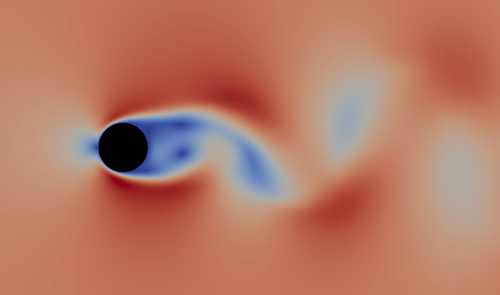
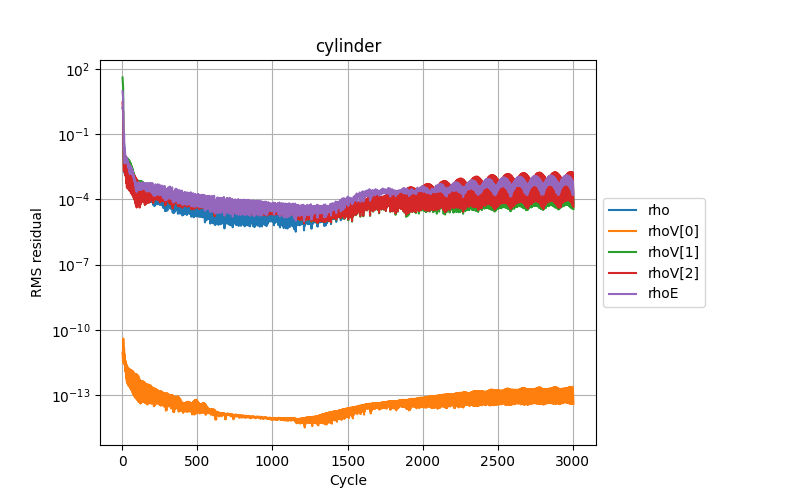
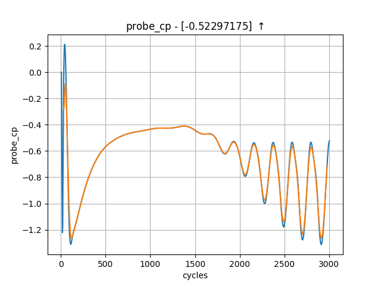

Tutorial 3: Time accurate solution¶
Introduction¶
Following on from executing the steady state simulation of Tutorial 2, this tutorial will explore the generation of a time accurate result for the unsteady laminar shedding from a 2D cylinder.
You can download the required files here.
Control Dictionary Breakdown¶
This case uses a similar control dictionary as the previous 30p30n steady state simulation, with the main difference being the time marching, and output regions of the file.
Time Marching¶
To switch to a time accurate simulation we need to update the “time marching” dictionary. In the steady state tutorial 2 case the ‘total time’ and ‘time step’ parameters were both set to 1.0, this causes the solver to run a single steady state timestep for the number of cycles defined by the ‘cycles’ parameter.
We will now update these to run the time accurate simulation. To do this we set ‘total time’ to be 1.2, which means the simulation will be run for a total of 1.2 seconds. ‘time step’ is set to 0.002 seconds, this is the interval at which the solver will step time forwards. Which means we will have a total of 1.2 / 0.002 = 600 total unsteady timesteps to perform.
'time marching' : {
'unsteady' : {
'total time' : 1.2,
'time step' : 0.002,
'order' : 'second',
'start' : 0,
},
'scheme' : {
'name' : 'implicit euler',
'stage': 1,
},
"cfl": 200,
"cfl viscous factor": 1.0E-6,
"cfl ramp factor": {"initial": 0.1, "growth": 1.05},
"cycles": 5,
},
zCFD uses dual time stepping to advance in real time by first iterating to convergence on an inner steady state ‘pseudo time’ loop, before advancing the real time cycle. In this case the inner loop is performed using implicit euler time marching, the number of cycles this inner loop performs is controlled by ‘cycles’. So the in the example above the inner loop runs at a CFL of 200 for 5 cycles.
The choice of timestep size, and number of cycles per inner loop will have a significant effect on the quality and cost of the final solution. Using too large of a real time step will mean higher frequency unsteady effects are lost, similarly too few inner cycles will result in unsteady effects being lost. A rule of thumb is to ensure the residuals converge by at least two orders of magnitude over an inner cycle. On the other hand if too many cycles or timesteps are performed, the cost of the simulation will quickly increase. Finally the number of cycles to reach convergence in a pseudo time loop also depends on the step size. Meaning in some cases it is actually beneficial to run a smaller timestep, in order to require fewer inner loop iterations.
Output¶
The ‘write output’ dictionary in the control dictionary is a bit more complicated here than in tutorial 1 or tutorial 2.
"write output": {
"format": "vtk",
"surface variables": ["V", "p", "T", "rho", "cp"],
"volume variables": ["V", "p", "T", "rho", "m", "cp"],
"frequency": {
"volume data": 5,
"surface data": 5,
"checkpoint": 20,
},
},
First of all, the ‘frequency’ parameter takes on a different meaning in a time-accurate simulation (tutorial 1 and tutorial 2 are both steady-state simulations).
In a steady-state simulation, the ‘frequency’ parameter controls how the number of pseudo-time ‘cycles’ between solver outputs. Since we have no real interest in any data apart from the converged data at the end for a steady-state simulation, every time the solver outputs data, it over-writes the previous output data.
We run time-accurate simulations when we’re interested in the variation of the flow over time (e.g. due to vortex shedding), so in the time-accurate solver data outputs are not over-written, and the ‘frequency’ variable relates to the number of real time steps between outputs, instead of number of pseudo-time cycles between outputs.
While we can just use a single number for ‘frequency’ (e.g. "frequency": 5), we can also specify ‘frequency’ as a dictionary for more fine grained control. This is especially relevant in time-accurate simulations, where frequent data output can not only slow down the simulation but also quickly use up disk space. Generally the volume data takes longest to output, so for large cases it can be a good idea to output volume data output infrequently, and instead rely on surface data, monitor points and volume intepolated data for high frequency data collection.
In this, a relatively small case, we have chosen to output surface and volume data every 5 real time-steps. Since the ‘time step’ was set to 0.002 seconds, the volume and surface data will therefore be written out every 0.01 seconds of simulated time. We have chosen to output checkpoint data (see here) less frequently.
Monitor Points¶
In order to capture the shedding frequencies of vortices behind the cylinder, we will place a monitor point in this region to append data to the report file. A monitor point will simply report the requested output variables, at the point defined within the flow. These results can be visualised alongside the force report in the output notebook.
"monitor": {
"MR_1": {
"name": "probe",
"point": [0.25, 1.07, 0.313],
"variables": ["cp"]
}
},
Running the case¶
You can run the case as you did for Tutorial 1, but with the following run_zcfd command:
run_zcfd -m cylinder.h5 -c cylinder.py
Post Processing¶
Output report¶
Start and connect to a Jupyter server, using ‘start_lab’ as outlined in the previous sections. Go ahead and run all cells.
In the “plot_forces” cell, you should notice additional data points available provided by the monitor point. Visualising the pressure trace [probe_cp] should reveal an oscillatory pattern, indicating that the predicted vortex shedding is indeed occurring. This trace can then be used to calculate the corresponding shedding frequency.
Flow field¶
We set the output frequency to 5 when running the case and so the solver will have written visualisation VTK files every 5 real time steps. If you look in the ‘cylinder_P1_OUTPUT/VISUALISATION’ directory you will see a series of .vtp and .pvtp files, one for every written timestep.
You could load these individually but the easier method is to load the ‘cylinder.pvd’ in ‘cylinder_P1_OUTPUT/’. This .pvd file links to all of the timesteps.
Launch Paraview and load ‘cylinder_P1_OUTPUT/cylinder.pvd’. Paraview will render a single solution time step at a time, and time series data can be navigated using the icons at the top of the screen:
Animation¶
For unsteady data it is often useful to output an animation of the solution. This can be done in Paraview by either exporting an image per timestep and then using a third party tool to stitch the images into a video or by saving the animation directly. The advantage of the first approach is that it can easily be scripted and is more suitable for large cases. Since this case is quite small we will export an mp4 video directly from Paraview. The steps to do this are:
Launch Paraview and load ‘cylinder_P1_OUTPUT/cylinder.pvd’.
Set the view up to shade the output by “cp” and zoom/move the image until you are happy with the view:
Select ‘File->Save Animation’ in Paraview. To export as video select your preferred format, the format will depend on your Operating System but for Windows you should be able to select “MP4 files” and on Linux “FFMPEG AVI”. Give the file a name and click OK.
On the next screen you can set the target resolution, frame rate and the timesteps to export. Set the Image resolution to 1920x1080 (FHD) and the frame rate to 24. If you just want to export the end of the simulation (where the oscillation is established) you can set the Frame Window from 300 to 600.
Click OK to export the animation. This will take some time.
You should now have an exported video of the unsteady simulation.

{kind=link}
{kind=link}
{kind=link}
{kind=link}
{kind=link}